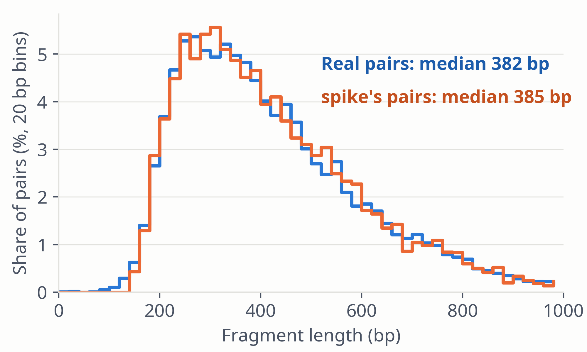

| Real | spike | |
|---|---|---|
| Pairs | 11,760 | 6,504 |
| Median (bp) | 384 | 385 |
| Mean (bp) | 420.9 | 422.7 |
Two-sample Kolmogorov–Smirnov: D = 0.013, p ≈ 0.52 (asymptotic).
Pairs from overlapping windows are not fully independent, so p is approximate.
Figure 10. |TLEN| of properly paired read 1, ≤ 1,500 bp, in the 25 windows of the SNV run, as share of pairs per 20 bp bin. Synthetic lengths are resampled from the donor pool's observed lengths.
spike · Results · 17 / 27